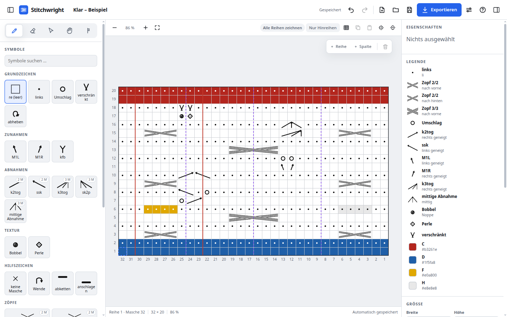

Raster und Symbole
Beliebig große Charts, Zoom, Reihen- und Maschennummern. Das Standardpack „Klar“ enthält re, li, Umschlag, Zu- und Abnahmen, verschränkte Maschen, Bobbel, Perlen, Wenden und Kantenzeichen.
Stitchwright ist ein freier, lokaler Editor für Strickdiagramme. Du zeichnest Maschen, Farben und Zöpfe; die App macht daraus ein sauberes SVG zum Drucken. Keine Cloud, kein Konto, keine Telemetrie.

Version 0.2.0-alpha.1 ist ein erster benutzbarer Stand. Fehler sind wahrscheinlich, das Dateiformat kann sich noch ändern, und nicht jede Funktion ist auf jedem Gerät getestet. Bitte sichere wichtige Charts zusätzlich als JSON-Datei. Für Produktivdaten ist die App noch nicht gedacht.
Stitchwright ist ein Werkzeug zum Zeichnen von Strickdiagrammen – nicht zum Schreiben von Strickanleitungen. Es ersetzt das Kästchenpapier: Du setzt Symbole in ein Raster, markierst Rapporte, zeichnest Zöpfe über mehrere Maschen und exportierst das Ergebnis als Vektorgrafik.
Die Oberfläche ist auf Maus, Touch und Stift ausgelegt. Häufige Arbeitsschritte – zeichnen, radieren, Reihe oder Spalte ergänzen, rückgängig machen, exportieren – liegen direkt auf der Fläche. Wer eine Reihe oder Spalte löschen will, klickt ihre Nummer an und bestätigt.
Charts sind offenes JSON. Dieselben Daten lassen sich in der App bearbeiten, mit der Node-CLI prüfen und als SVG rendern. Das Format ist dokumentiert; es gibt keine versteckte Datenbank und keinen Server.
Der aktuelle Stand deckt die Grundlagen des Diagrammzeichnens ab. Weitere Funktionen sind geplant, aber nicht heimlich schon „fast fertig“.
Beliebig große Charts, Zoom, Reihen- und Maschennummern. Das Standardpack „Klar“ enthält re, li, Umschlag, Zu- und Abnahmen, verschränkte Maschen, Bobbel, Perlen, Wenden und Kantenzeichen.
1/1 bis 4/4, vorne und hinten, als ein Symbol über die ganze Maschengruppe. Die Über-/Unterführung ist sichtbar; die Legende nennt die genaue Richtung.
Farbflächen pro Masche, eigene Farben, Farb-Legende und lesbare Symbole auf hellen und dunklen Hintergründen. Farben sind eine eigene Ebene, kein Ersatz für die Symbolsprache.
Alle Reihen zeichnen oder nur die Hinreihen mit Nummerierung 1, 3, 5 … Rückreihen bleiben gespeichert und lassen sich jederzeit wieder einblenden.
Beschriftete Mehrfachsymbole wie TL oder TR
bleiben in einer lokalen Bibliothek. Du kannst ihnen einen
Legendentext mitgeben, damit später klar ist, was gemeint war.
Gestrichelte Hilfslinien teilen das Chart in Maschengruppen, einzeln gesetzt oder automatisch alle N Maschen. Sie sind nur eine Zeichenhilfe und keine Strickanweisung.
Mit dem Auswahlwerkzeug einen Bereich aufziehen, kopieren und an einer anderen Stelle einfügen. Farben und Mehrfachsymbole wandern mit.
SVG für den Druck, PNG zum Teilen, JSON als Quelle. Der Browser druckt das SVG direkt; eine zusätzliche PDF-Bibliothek braucht es nicht.
Der Editor zeichnet nur den sichtbaren Ausschnitt. Scrollbalken erscheinen, sobald das Chart größer als das Fenster ist. Bei sehr kleinem Zoom bleibt die Übersicht flüssig.
Als installierbare Web-App (PWA) läuft Stitchwright nach dem ersten Laden ohne Netz. Charts und Einstellungen bleiben im Browser oder in Dateien, die du selbst speicherst.
Die Oberfläche ist auf Deutsch und Englisch gepflegt. Metrisch und imperial sind umschaltbar; weitere Sprachen sind vorbereitet, aber noch nicht redaktionell geprüft.
Stitchwright schreibt keine Strickanleitung und rechnet keine Passform. Das Diagramm ist das Produkt. Wer Prosa braucht, schreibt sie selbst oder mit einem anderen Werkzeug.
Es gibt keine Anmeldung, keine Synchronisation und keine Kollaboration. Deine Charts verlassen das Gerät nur, wenn du sie exportierst. Das ist Absicht, nicht eine fehlende Funktion.
Der Editor zeichnet auf Canvas und nur den sichtbaren Ausschnitt. Der Export erzeugt SVG aus demselben Modell und denselben Symboldaten. Das hält die Bearbeitung schnell und den Druck scharf.
Ein Chart ist eine JSON-Datei mit Raster, Farben, Gruppen und Optionen. Das Schema liegt im Repository. Agenten können dieselbe Datei lesen, schreiben, prüfen und rendern wie die App.
node cli/stitchwright.js validate chart.strickschrift.json node cli/stitchwright.js render chart.strickschrift.json chart.svg node cli/stitchwright.js legend chart.strickschrift.json
Stitchwright ist absichtlich so gebaut, dass ein Agent und ein Mensch dieselben Daten benutzen können. Die CLI braucht keinen Browser und keine Netzwerkverbindung. Die Validierung liefert strukturierte Diagnosen; das Rendern ist deterministisch.
Der Agent schreibt JSON, prüft es mit validate und
rendert eine Vorschau mit render. Der Mensch öffnet
dieselbe Datei im Editor und korrigiert, was nur ein Stricker sehen
kann. Keine Export-/Import-Schleife, keine doppelte Wahrheit.
Keine Analyse, keine Werbung, keine externen Schriften, keine CDNs.
Keine Anmeldung, kein Profil, keine Cloud. Alles bleibt lokal.
Charts werden gespeichert, exportiert und geteilt, wenn du es sagst.
Keine festen Termine. Die Reihenfolge ist eine Absicht, keine Zusage.
Stabilität, Fehler beheben, Touch auf echten Geräten prüfen, Tests erweitern, Dokumentation und Beispiele verbessern.
Eigene Symbol-Packs, ein Symbol-Editor, Theme-Editor, bessere Drucklayouts und mehr Farbmuster-Funktionen.
Übersetzungsdateien für weitere europäische Sprachen, mit klarer Kennzeichnung, solange eine Übersetzung nicht fachlich geprüft ist.
Import und Export mit anderen offenen Formaten, damit Charts nicht in einer Insellösung gefangen sind.
Cloud, Konten, Kollaboration, Telemetrie und native Apps. Wenn sich das ändert, braucht es eine offene Entscheidung – keine stille Erweiterung.
Öffne ein Issue im Repository. Hilfreich sind Browser, Betriebssystem, Schritte zum Nachstellen und – wenn möglich – die Chart-Datei. Bitte keine persönlichen Daten oder vertraulichen Projekte anhängen.
Übersetzungen sind JSON-Dateien; Symbol-Packs sind Daten. Beides lässt sich prüfen und erweitern, ohne den Editor umzubauen. Fachliche Prüfung durch Muttersprachler ist ausdrücklich erwünscht.
Stitchwright ist freie Software unter GPL-3.0. Der Quellcode liegt offen; die Entscheidungen stehen in ADRs, die Abläufe in SOPs und der Stand im Repository.
Der Code wurde von einem KI-Agenten (DeepSeek V4.1 Flash) im Auftrag von Daniel geschrieben und von ihm fachlich geprüft. Das ist kein Qualitätsbeweis und kein Marketing: Fehler sind möglich. Die Dokumentation sagt, was geprüft wurde und was nicht.
Lizenz: GPL-3.0. Quellcode und Issues: github.com/Stecker1312/stitchwright.
Stitchwright is a free, local-first knitting chart editor. It runs as a static web app and installable PWA, needs no account or cloud, and exports SVG, PNG and open JSON. It is an early alpha: bugs are likely, the file format may still change, and only German and English are currently maintained. The editor deliberately does not generate written instructions, pattern maths or row counters. The code is GPL-3.0 and was written by an AI agent under human review.